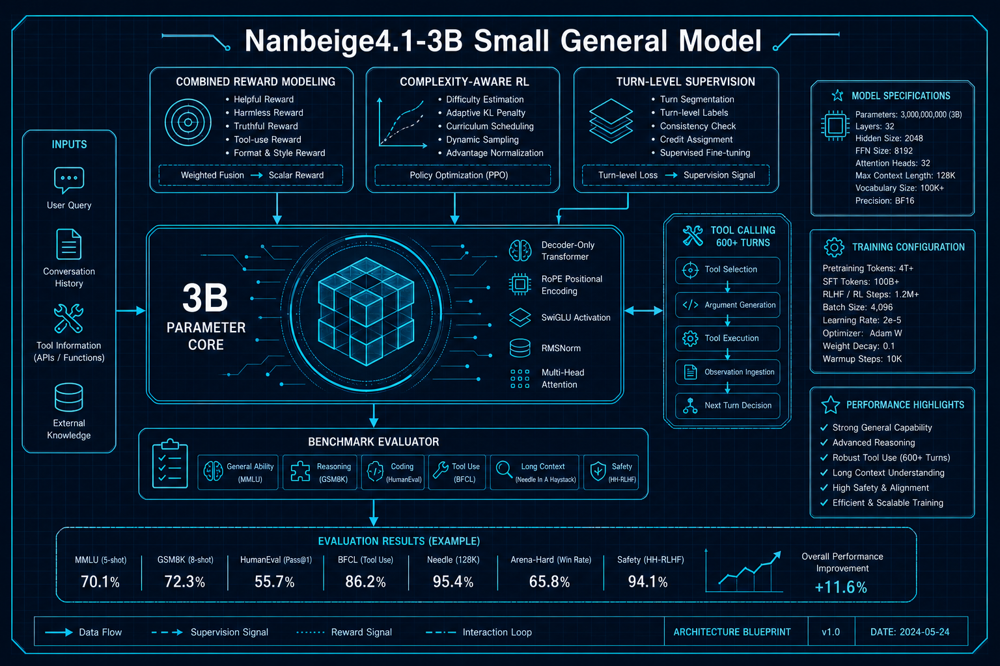
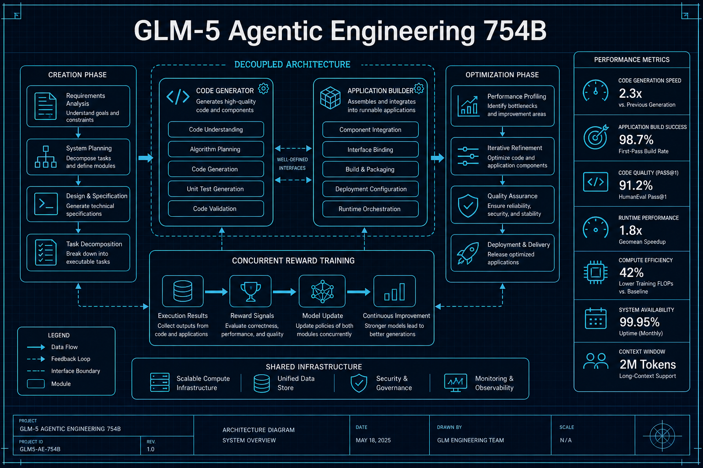
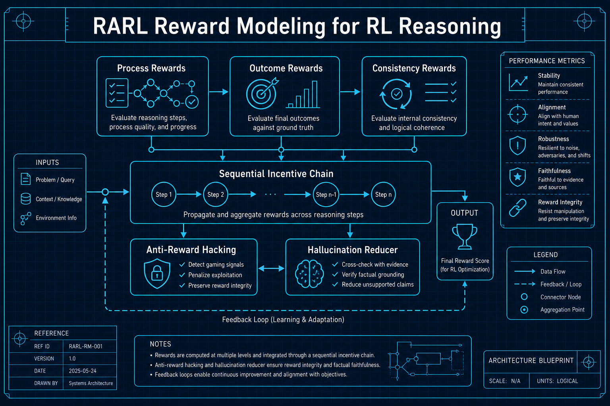
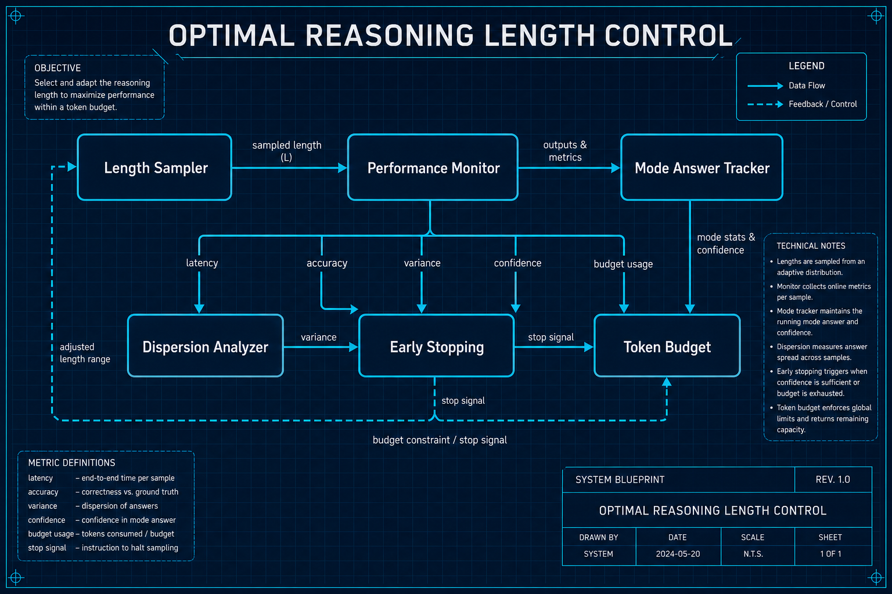
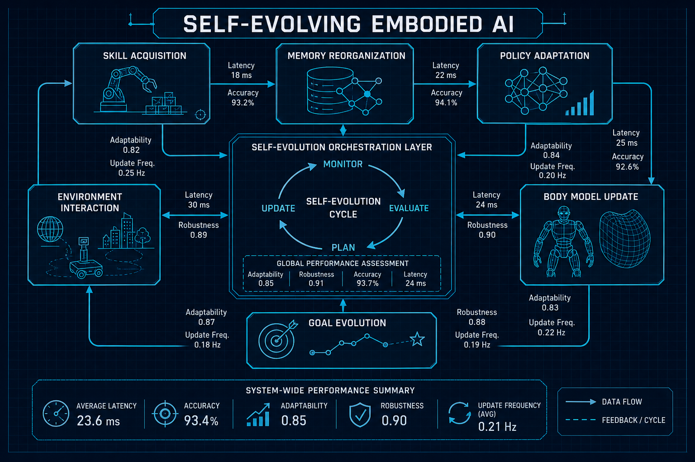
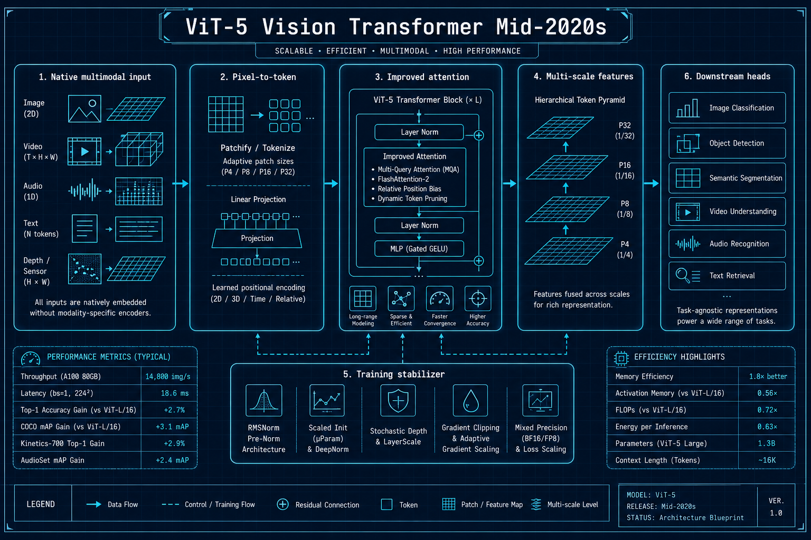
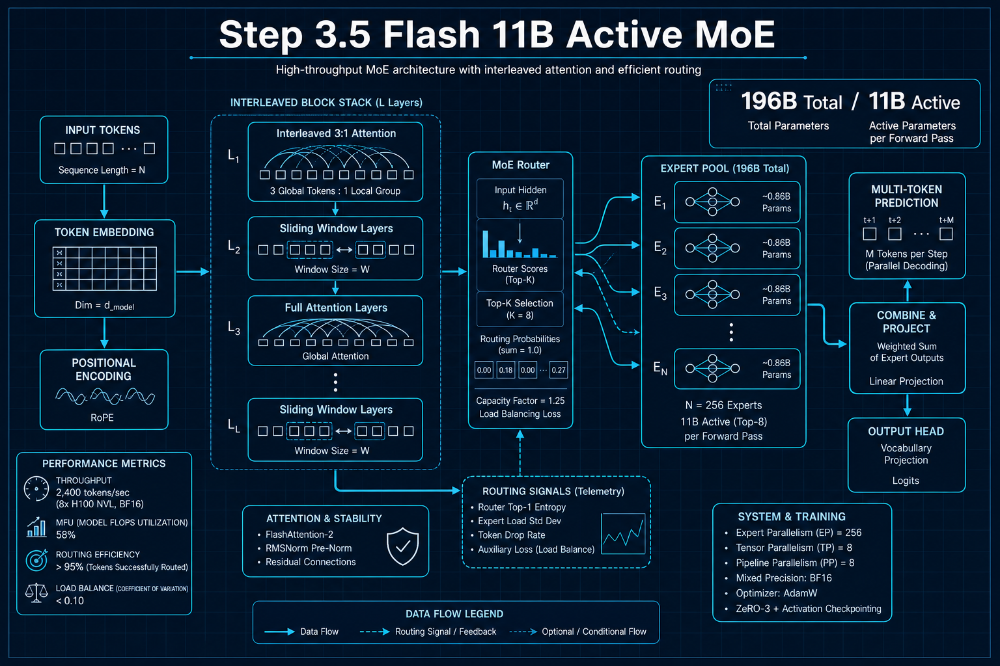
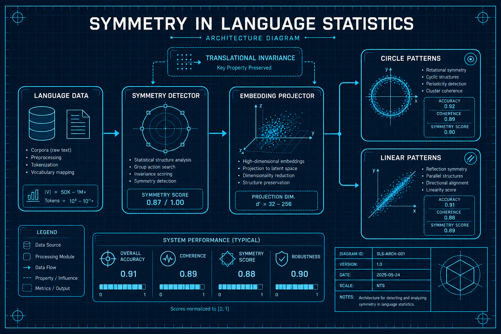

8 篇前沿论文 | 4 大分类 | 深度解读 + 工程蓝图 + 量化应用
大模型能力强但部署成本高。精巧的训练策略可以弥补参数差距。
三板斧：(1)组合奖励建模 (2)复杂度感知RL (3)600轮Turn级监督。

当前AI编程擅长写函数但不擅长构建应用。"创造"和"优化"需要不同的思维模式。
解耦两阶段：创造阶段(架构设计+初始代码) + 优化阶段(审查+修复+调优)，用不同奖励模型训练。

只看最终答案的奖励导致"奖励黑客"——模型学会捷径而非真正推理。
序列激励策略：过程奖励(推理步骤质量) → 结果奖励(答案准确) → 一致性奖励(过程与结果对齐)。

推理模型生成大量思维链。最优长度是多少？如何控制？
系统分析长度与性能的非单调关系。发现"分散效应"：长推理在正确答案周围产生更多变体。

传统机器人需要预定义所有场景。Self-evolving AI让机器人自主发现新挑战、开发新能力。
5种机制：技能获取→记忆重组→策略适应→身体模型更新→目标演化。

2020年ViT已无法充分利用多模态AI的最新进展。需要系统性架构升级。
(1)原生多模态输入 (2)改进注意力机制 (3)大尺度训练稳定性。

前沿模型太慢太贵。能否在保持前沿能力的同时大幅降低推理成本？
交错3:1注意力(3层滑窗+1层全注意力) + 多Token预测(一次预测多个Token)。

嵌入空间的结构是训练算法决定的，还是语言本身的性质决定的？
发现"平移不变性"直接决定嵌入几何：循环对称性→圆圈，线性对称性→直线。
